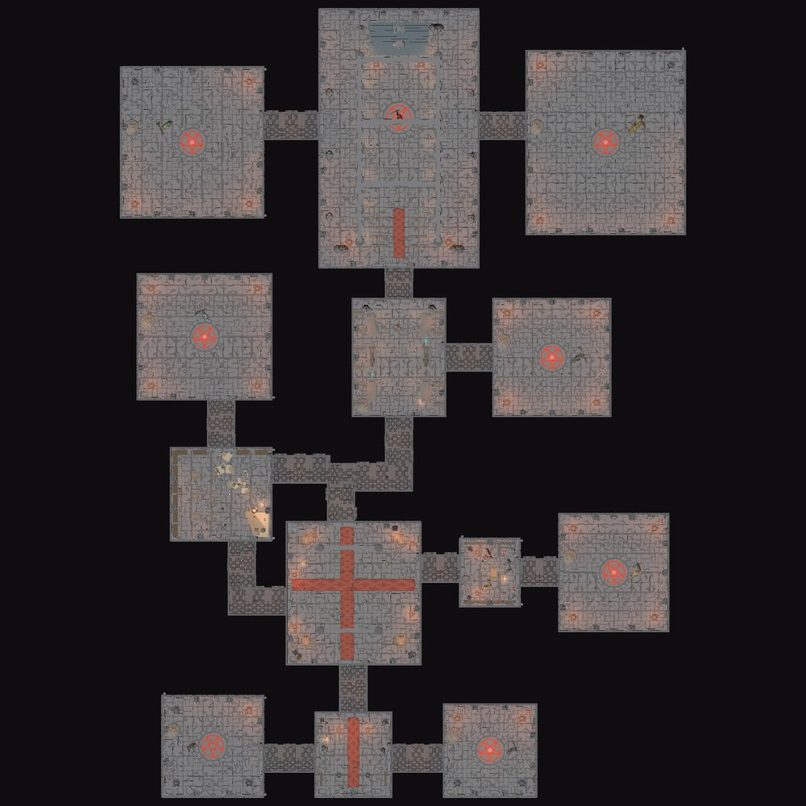
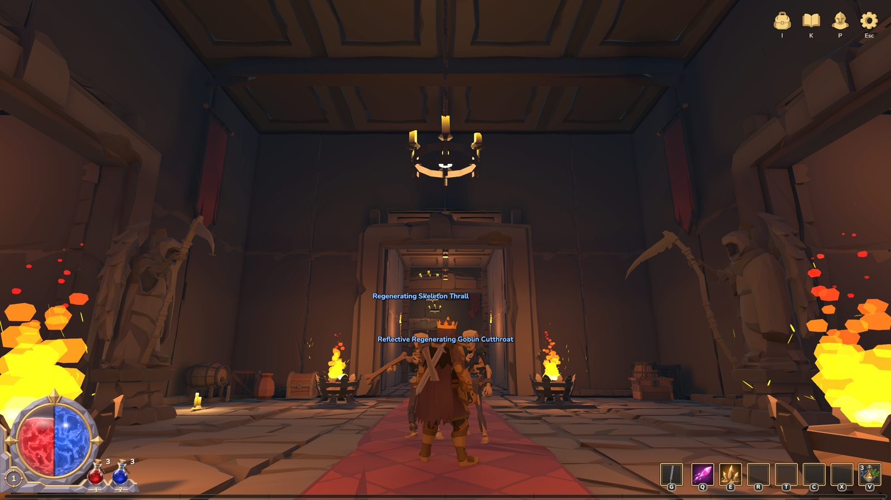
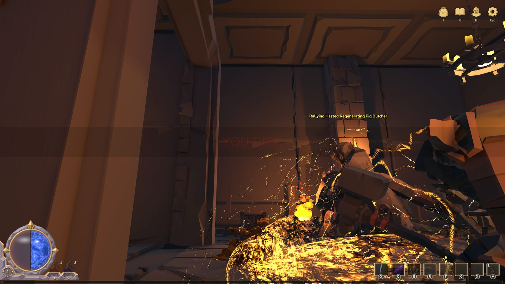
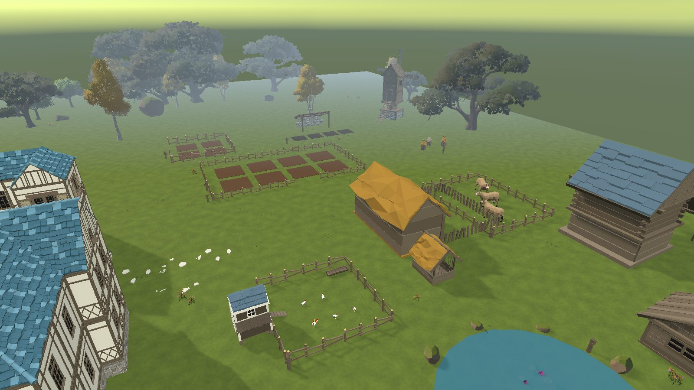
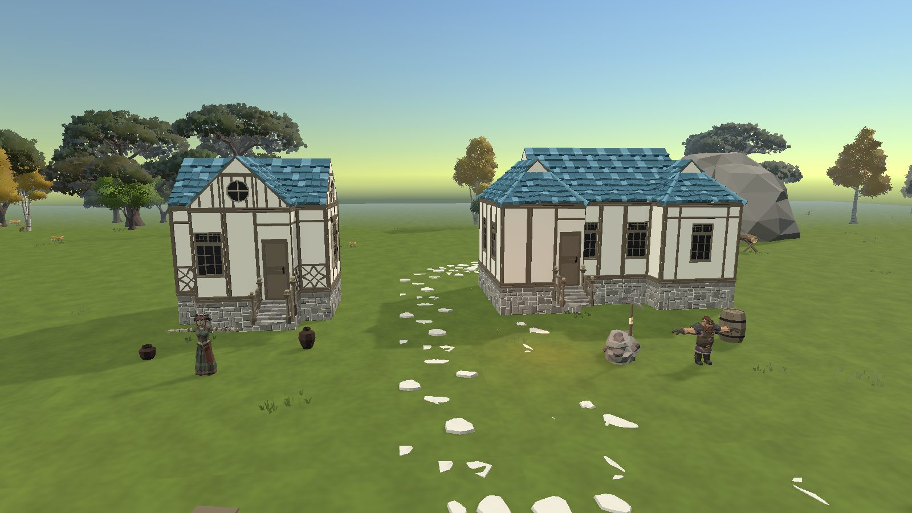
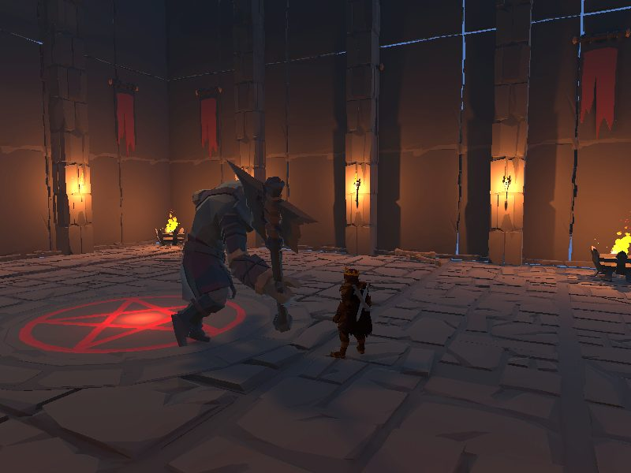
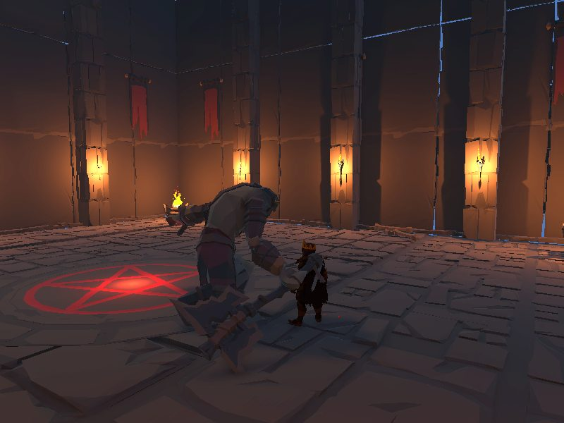

PROJECT K
Nhật ký thay đổi
Mọi thay đổi của project, theo ngày — mới nhất trước. Lọc theo mảng hoặc tìm bằng ô bên trái.
Không có ghi chú khớp bộ lọc.
Tổng quan
Vòng lặp chính
Tiến độ
Chỉ tính những mục bạn đã bấm Done (mặc định Undone) — hệ thống và việc sắp tới. Bấm một mảng để lọc hệ thống.
Theo mảng
Đang làm ngay
Cập nhật gần nhất ·
Ghi chú của bạn
·
Hệ thống
Bấm một thẻ để xem chi tiết, số liệu, việc sắp tới và nhật ký liên quan.
Không có hệ thống khớp bộ lọc.
Vũ khí & bộ đòn
6 bộ đòn hoàn chỉnh, 347 model vũ khí — cầm và đeo tự khớp với nhân vật.
Thế giới

Crimson Castle
Lâu đài rẽ nhánh — không đi một đường thẳng, phòng to nhỏ khác nhau. Bố cục khai báo bằng hình chữ nhật trên lưới 1 m; tường, sàn, trần và khung cửa sinh tự động, rồi kiểm tra mọi phòng tới được.






Làng Hearthvale
Hub của người chơi: lửa trại, 6 NPC dịch vụ và trang trại chạy theo giờ thật. Scene đã gỡ trong đợt dọn 03/10 — code dịch vụ và trang trại vẫn còn, trạm NPC hiện đặt trong Eldmoor.
- BrannocThợ rèn — gỡ dòng, Khắc Ấn, rune trang bị, phân giải, rèn base
- Old MirelleThầy thuốc — 10 thuốc buff
- HestaBếp — 5 món + Honey Milk
- QuillTạp hoá — 14 đồ vui, mua / bán
- Keeper AldousĐiện Ký Ức — đánh lại boss
- Tẩy TủyHoàn điểm passive / thuộc tính
Các scene khác
Kẻ địch
8 boss trong lâu đài, 26 loại quái thường, quái Magic / Rare có mod.


Điều khiển
Sắp tới
Đang làm, tiếp theo, để sau và ý tưởng — mỗi mục gắn với một mảng. Bấm Done khi xong để tính vào tiến độ.